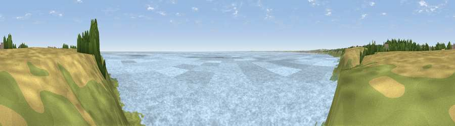

Viewpoint near Flamborough
#18760 in England · top 77% of its area beats it · near FlamboroughThe view, rendered

A 360° render of this exact spot computed from the terrain model, tree cover and land cover — summer colours, afternoon light, calibrated against photographs of famous viewpoints. Real trees, hedges and buildings will differ in detail.
The panorama
Grey silhouette: terrain skyline in each direction (720 bearings, Earth curvature and refraction included). Dashed green: skyline with trees (+15 m) and buildings (+8 m) as obstacles. Blue strip: how far the ground is visible on each bearing.
Where the view opens
Wedge length = distance to the farthest visible ground on that bearing (vegetation-aware). Rings at 10, 25 and 50 km.
What fills the view
89% water · 5% grassland · 4% cropland · 1% wetland
Angular shares of the visible panorama (visual magnitude), not map area. Landscape diversity 0.21 (0–1 Shannon).
Key numbers
More beautiful places nearby
The staircase of upgrades: each row has a higher view potential than everything closer. Driving times are estimates from straight-line distance, calibrated against real road routing — check an actual route before setting out.
| Place | Direction | Drive | Score |
|---|---|---|---|
| Viewpoint near Flamborough | W · 1 km | ~3 min | 61.2 |
| Viewpoint near Flamborough | NNW · 4 km | ~9 min | 69.9 |
| Viewpoint near Bempton | NNW · 5 km | ~11 min | 70.2 |
| Viewpoint near Bempton | NW · 7 km | ~14 min | 72.8 |
| Viewpoint near Speeton | NW · 8 km | ~17 min | 74.4 |
| Viewpoint near Speeton | NW · 11 km | ~20 min | 80.0 |
| Olivers Mount | NW · 26 km | ~42 min | 80.3 |
| Viewpoint near Ravenscar | NW · 40 km | ~59 min | 82.7 |
54.10364, -0.11230 · source: screening · position refined by local search. Computed location — check access rights before visiting.